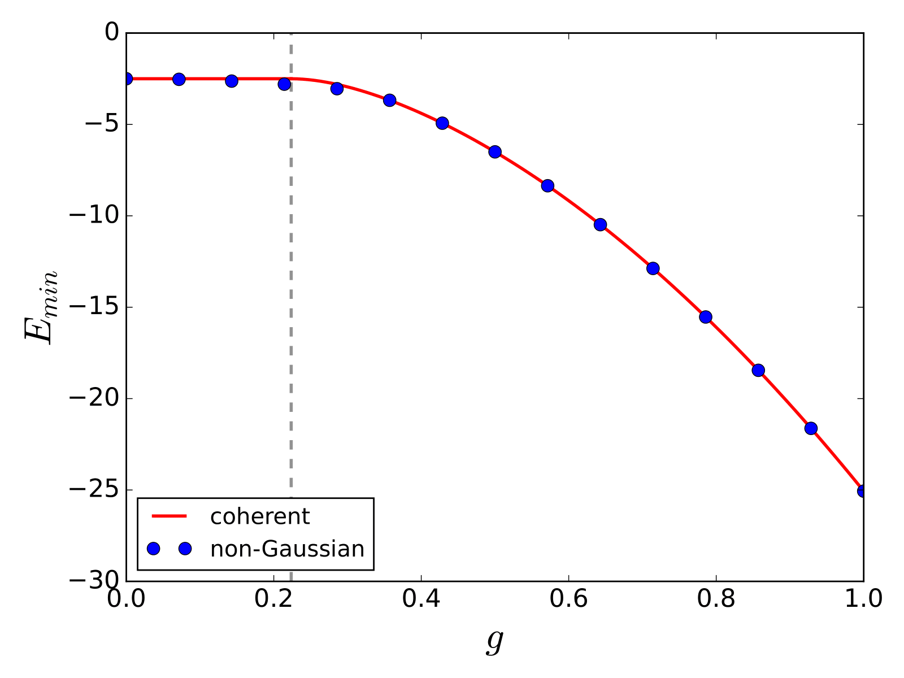

Many-body theory of quantum batteries
João P. Mendonça, Krzysztof Jachymski,and Yao Wang (Clemson, SC, USA).
Motivation: Quantum batteries
*Sci. Adv. 2022, 8 eabk3160
Motivation: Quantum batteries
*ACS Photonics 2018, 5, 1, 65–79
Background
- Dicke model,
- The variational principle,
- Yao Wang's method.
Dicke model
The Dicke model is one of the most fundamental models describing light-matter interaction. The Hamiltonian is written as
- \(N\) two-level systems;
- Single bosonic mode;
- No rotating wave approximation.
Dicke model
The Hamiltonian
$$ H = \omega_0 a^{\dagger} a + \Delta\sum_{j=1}^N \sigma_j^z + g(a+a^{\dagger})\sum_{j=1}^N \sigma_j^x. $$
Total spin picture
$$ H=\omega_0 a^\dagger a+\Delta S^z+g S^x (a+a^\dagger).$$ Due to this symmetry, the atomic degrees of freedom can be described in terms of \(N + 1\) states.
Dicke model
The Hilbert space of this algebra is spanned by the Dicke state \( \{|j,m\rangle,m=-j,-j+1,...,j-1,j \} \) with \( j=N/2\).
The Hilbert space of the total system can be expressed in terms of the basis \( \{ |n\rangle \otimes |j,m\rangle \} \), where \(|n\rangle\) is the Fock state basis.
Dicke model
Superradiant transition
It was found that, when the coupling \( g\) crosses a critical value \( g_c\), the Dicke model undergoes a second-order phase transition, known as the superradiant phase transition.
The variational principle
Let us suppose you wish to solve the time-independent Schrödinger equation, $$ H|\psi \rangle = E|\psi \rangle,$$ where \(|\psi \rangle\) is a trial solution. The variational principle states $$ \langle\psi | H |\psi \rangle > E_0,$$ where \(E_0\) is the true ground state energy.
Yao Wang's method
A hybrid method that combines the variational principle, exact diagonalization, and an imaginary-time evolution of the variational parameters.
- Define an effective spin Hamiltonian \( H_{eff}=\langle \psi_{ph} | H | \psi_{ph}\rangle \), calculate the energy throught ED, and minimize the energy for fixed variational phonon parameters;
- Fix the electronic ansatz and perform imaginary-time evolution of the variational phonon parameters;
- Repeat the steps until the variational parameters converge.
Yao Wang's method

*Phys. Rev. Research 2, 043258 (2020)
Application of the method
on the Dicke model
Application of the method
on the Dicke model
Let us assume the state can be written as \( |\psi\rangle = |\psi_e\rangle \otimes |\psi_{ph}\rangle \).
Define the spin part of it,
$$ |\psi_{e}\rangle = e^{-i\frac{\theta}{2}\sum_j\sigma_j^y}|\downarrow_1\downarrow_2\cdots\rangle \equiv e^{-i\theta S^y/2}|N/2,-N/2\rangle. $$
Application of the method
on the Dicke model
Case A: Coherent photon state ansatz
A coherent state $$ |\psi_{ph}\rangle=|\alpha\rangle\equiv D(\alpha)|0\rangle $$ is an eigenstate of the annihilation operator \(a|\alpha\rangle=\alpha|\alpha\rangle\). Its amplitude \( |\alpha| \) is related to the average number of photons.
Application of the method
on the Dicke model
Case A: Coherent photon state ansatz
The solutions \( E_3^*\) and \( E_4^*\) only exist above a critial coupling \( g_c=\sqrt{\omega_0\Delta/N} \).
Besides, \( E_1^*,E_2^*\propto N\) while \(E_3^*,E_4^*\propto N^2 \)
Application of the method
on the Dicke model
Case B: Variational non-Gaussian transformation
Here we construct a variational wave function that absorbs entanglement between electrons and phonons into a variational non-Gaussian transformation, \( |\psi\rangle = U_{plrn}|\psi_e\rangle \otimes |\psi_{ph}\rangle \) where
Application of the method
on the Dicke model
Case B: Variational non-Gaussian transformation
Concluding remarks and next steps
Work in progress
Case C: Gaussian state ansatz
$$ |\psi_{ph}\rangle = S(\xi)|\alpha\rangle \equiv S(\xi)D(\alpha)|0\rangle. $$
Case D: NGS + Gaussian ansatz
\( |\psi\rangle = U_{plrn}|\psi_e\rangle \otimes |\psi_{ph}\rangle \), where \( |\psi_{ph}\rangle = S(\xi)|\alpha\rangle \).Work in progress
Spin-spin coupling
Interaction between neighboring spins is an inevitable extension of the model and presents additional challenges. We can add an Ising-like coupling term, $$ \sum_{ij} \sigma_i^z\sigma_j^z. $$ Here the \( Z_2\) symmetry is broken. ED will be necessary.
Perspectives
Use chemistry parameters
In March we plan to visit USA and work along with
prof. Liu's chemistry group at Emory University, Atlanta.